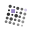

三个风格方向各做各的，互不参照。上排是成品在夜间底 / 昼面底，中排是梦态。下面两条是把它放进真实标签栏的样子。点开各套的 mockup 看尺寸带、单色退让与语境格。
一枚自带的夜：靛色玻璃片里悬着一点光。 光在左上，就是主页左上角那团冷光的位置；
深栏那两格发黑不是图坏了：SVG 里的换墨靠 prefers-color-scheme，它跟的是系统主题，不是标签栏深浅。这张板是在系统浅色下截的，所以深栏里仍用深墨。真上线时得用 JS 换 <link rel="icon">。
把主页那根 14° 的阶梯发丝线折进方框，让台阶的下落本身成为标记的中轴 ——
深栏那两格发黑不是图坏了：SVG 里的换墨靠 prefers-color-scheme，它跟的是系统主题，不是标签栏深浅。这张板是在系统浅色下截的，所以深栏里仍用深墨。真上线时得用 JS 换 <link rel="icon">。
成品：favicon.svg（发货那一份）· favicon-dream.svg（梦面）

深栏那两格发黑不是图坏了：SVG 里的换墨靠 prefers-color-scheme，它跟的是系统主题，不是标签栏深浅。这张板是在系统浅色下截的，所以深栏里仍用深墨。真上线时得用 JS 换 <link rel="icon">。